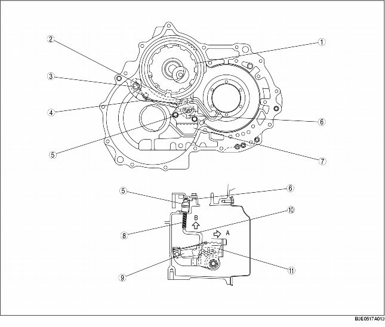

Parking mechanism operation
• When the selector lever is moved to P position, the manual shaft and the manual plate move in the direction of the arrow A to the position as shown in the figure below. Then the parking rod component moves in the direction of the arrow B, the parking rod component cam pushes up the parking pawl, and the parking pawl engages the parking gear.
If the parking pawl hits the tooth of the parking gear, the parking pawl cannot be pushed up, so only the parking rod component is able to move. The cam presses the spring onto the parking pawl and the actuator. If the vehicle runs even a little under this condition, the wheels rotate and parking gear also rotates slightly. As a result, the parking pawl slides into the groove, and engages the parking gear.
Thus, the parking mechanism prevents the vehicle from moving in P position.

.